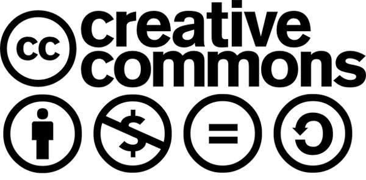

SUMBER BELAJAR
BERKENALAN DENGAN GERAKAN KETERBUKAAN DAN LISENSI CREATIVE COMMONS
Creative Commons (CC) adalah organisasi nirlaba yang berpusat di Mountain View, Canada, dengan jaringan global yang tersebar di lebih dari 100 negara. Creative Commons Indonesia (CCID) adalah salah satu bagian dari jaringan global CC yang ada di Indonesia.

Kegiatan kami ialah melakukan serangkaian upaya untuk meningkatkan jumlah ciptaan yang dapat dengan mudah dimanfaatkan kembali oleh pengguna ciptaan secara legal. Upaya tersebut didukung dengan penyediaan seperangkat lisensi terbuka bernama lisensi Creative Commons (lisensi CC) yang dapat diterapkan pencipta atau pemegang hak cipta kepada ciptaannya untuk membuka akses terhadap ciptaannya sambil tetap mempertahankan hak atas ciptaannya (Some Rights Reserved). Upaya ini dilaksanakan karena melihat bagaimana ketentuan dalam regulasi hak cipta semakin membatasi pengguna ciptaan, tanpa memperhatikan asas keseimbangan. Keseimbangan yang dimaksud ialah bagaimana peraturan seharusnya memberikan ruang keterbukaan akses terhadap ciptaan yang disediakan oleh teknologi terkini. Termasuk, bagaimana nilai kemanfaatan ciptaan dapat dirasakan lebih lanjut lagi oleh publik. Karena, ketika lisensi ini diterapkan pada suatu ciptaan, pengguna ciptaan paling tidak dapat menggandakan (mengunduh) dan menyebarluaskan kembali ciptaan tanpa izin langsung dari pencipta. Sesuatu yang tidak dimungkinkan apabila prinsip yang dianut adalah prinsip hak cipta konvensional (All Rights Reserved).
PENERAPAN LISENSI CREATIVE COMMONS

Dasar berlaku lisensi CC adalah Angka 20 Ketentuan Umum Undang-Undang Hak Cipta Tahun 2014 (UUHC 2014). Secara teknis, lisensi CC memiliki fungsi yang sama dengan sistem lisensi pada umumnya yaitu sebagai pemberitahuan tertulis. Pemberitahuan ini merupakan lisensi publik, yang diterapkan dengan menempelkan suatu tanda dalam bentuk piktogram dan teks pada ciptaan. Tanda tersebut dimaksudkan sebagai penjelasan sederhana tentang apa yang boleh dan tidak boleh dilakukan oleh pengguna ciptaan terhadap ciptaan. Penjelasan sederhana ini juga dimaksudkan sebagai pengganti biaya konsultasi hukum yang mahal.

Lisensi ini terdiri dari 4 spektrum (lihat gambar sebelumnya) yang kemudian dapat dirangkai menjadi 6 pilihan lisensi seperti gambar di atas. Setiap spektrum menjadi ketentuan tambahan selain kewajiban Atribusi, yaitu penyebutan sumber dan nama pencipta dalam setiap penggunaan ciptaan. Apabila ciptaan menerapkan lisensi dengan ketentuan NonKomersial, maka segala penggunaan untuk kepentingan komersial tidak diperbolehkan. Lalu, jika ciptaan menerapkan lisensi dengan ketentuan TanpaTurunan, maka segala pengubahan, penggubahan, dan pembuatan ciptaan turunan dari ciptaan tersebut tidak diperbolehkan.
Hingga awal tahun 2016 lalu, terhitung setidaknya terdapat 3,2 miliar ciptaan berlisensi CC di seluruh dunia. Dalam perkembangannya, penerapan-penerapan lisensi CC tersebut terbagi menjadi beberapa bidang pergerakan. Gerakan-gerakan berbasis keterbukaan ini antara lain:
a. Open Access to Research & Open Education
Gerakan ini muncul karena tingginya biaya untuk mengakses atau mendapatkan pendidikan. Hal ini kemudian dirasa sebagai sebuah ketidakadilan bagi pihak-pihak yang paling membutuhkan, para pihak dari negara dunia ketiga misalnya, yang harus membayar biaya yang sama mahalnya dengan para pihak dari negara dunia pertama. Hak untuk mendapatkan ilmu pengetahuan pada hakekatnya merupakan milik semua orang. Batas-batas yang menyebabkan sulitnya ilmu pengetahuan untuk diakses berusaha untuk dikurangi oleh beberapa pihak seperti, Directory of Open Access Journal (DOAJ), Public Library of Science (PLOS), Open Educational Resources Commons (OER Commons) atau gerakan pendidikan terbuka di Indonesia seperti Universitas Terbuka. Kabar gembiranya, pada akhir tahun lalu Indonesia menempati urutan nomor 1 sebagai pengindeks karya ilmiah terbanyak di situs DOAJ, karena kini semakin banyak Universitas yang telah menerapkan prinsip Open Access pada setiap hasil penelitian.
b. Open Gallery, Library, Art, & Museum (GLAM) & Open Arts & Culture
Gerakan ini berupaya membangkitkan kesadaran pada lembaga arsip ilmu pengetahuan, khususnya kebudayaan peninggalan, seperti museum dan perpustakaan untuk menjadi terbuka untuk mempermudah akses publik terhadap pengetahuan. Hampir seluruh koleksi museum dan perpustakaan merupakan ciptaan yang telah habis masa berlaku hak ciptanya. Ciptaan-ciptaan tersebut kemudian menjadi bebas hak cipta dan bebas untuk digunakan oleh publik. Untuk memenuhi salah satu hak publik yang merupakan fungsi sosial dari hak cipta tersebut, maka setiap lembaga arsip dituntut untuk mempublikasikan setiap koleksi yang telah bebas hak cipta dengan menggunakan teknologi publikasi yang memudahkan akses publik dan menerapkan pemberitahuan hak cipta yang sesuai agar publik mengetahui status hak cipta tiap koleksi tersebut. Praktek-praktek ini dapat diketahui dengan mengikuti pengunggahan koleksi museum oleh The Metropolitan Museum of Art, Tropenmuseum dan proyek digitalisasi naskah tua oleh Wikimedia Indonesia.
c. Open Government & Open Data
Penerapan asas transparansi oleh lembaga-lembaga pemerintahan dapat meningkatkan akuntabilitas dari tiap lembaga tersebut. Hak untuk dapat mengakses informasi terkait proses pembuatan kebijakan dan kebijakan itu sendiri merupakan hak yang sifatnya fundamental untuk didistribusikan dengan baik pada publik. Sebagai contoh, pemerintah Indonesia berupaya untuk menjadi pemerintah yang terbuka (Open Government) dengan menerbitkan Undang-Undang No. 14 Tahun 2008 Tentang Keterbukaan Informasi Publik dan pembuatan portal data bernama Satu Data Indonesia. Ketersediaan data yang memberikan hak akses penuh pada publik merupakan bagian dari gerakan Open Data atau Data Terbuka. Gerakan ini melengkapi regulasi tentang keterbukaan informasi publik dengan pengetahuan tentang teknologi dan prinsip penyediaan data-data publik agar lebih mudah diakses dan dimanfaatkan oleh publik.
Kabar-kabar dari gerakan-gerakan keterbukaan ini membuktikan bahwa gerakan keterbukaan yang awalnya dimulai dari modifikasi dan penyesuaian perangkat hukum seperti lisensi dapat memberikan dampak yang luar biasa pada aktivitas berbagi. Kini, semakin banyak ciptaan-ciptaan yang dapat dengan mudah diakses dan digunakan kembali untuk dirasakan manfaatnya yang sesuai dengan segala perubahan yang terjadi dengan keterlibatan publik.
KISI-KISI KUIS DARING MISI 1 TRAINING OF TRAINERS CCID
1. Hak Cipta Dasar
- Hak Kekayaan Intelektual dan Hak Cipta
- Macam hak dalam Hak Cipta
- Pembatasan Perlindungan Hak Cipta
- Jenis-Jenis Pelanggaran Hak Cipta
- Jenis-Jenis Lisensi Hak Cipta
2. Creative Commons
- Organisasi dan Lisensi Creative Commons
- Tiga Lapisan Lisensi Creative Commons
- Versi-versi Lisensi Creative Commons
- Pertimbangan Penggunaan Lisensi Creative Commons
3. Penerapan Lisensi Creative Commons
- 4 Ketentuan dan 6 Pilihan Lisensi Creative Commons
- Spektrum Kebebasan Lisensi Creative Commons
- CC0 dan Tanda Domain Publik
SUMBER-SUMBER PEMBELAJARAN
Peserta dapat menggunakan sumber-sumber berikut untuk menunjang penyelesaian setiap Misi pada Training of Trainers Creative Commons Indonesia:
- Berkas Undang-Undang No. 28 Tahun 2014 Tentang Hak Cipta;(Direkomendasikan)
- Infografis Tentang Hak Kekayaan Intelektual oleh Hariadhi;
- Pranala buku budaya bebas Lawrence Lessig oleh Kunci Cultural Studies;
- Teks lisensi Creative Commons dalam Bahasa Indonesia;(Direkomendasikan)
- Buku “Konten Terbuka - Panduan Praktis Penggunaan Lisensi Creative Commons” dalam Bahasa Indonesia; (Direkomendasikan)
- Laman FAQ Creative Commons dalam Bahasa Indonesia (Direkomendasikan)
- Kumpulan artikel kajian tentang lisensi Creative Commons dalam Bahasa Indonesia;
{kind=link}